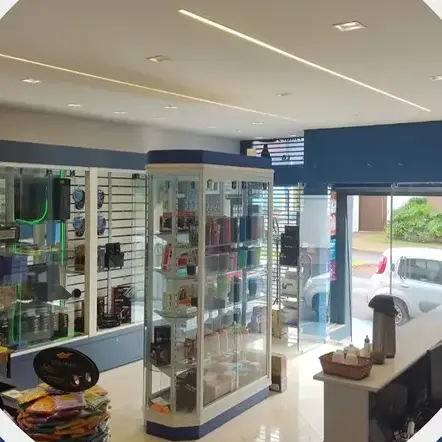

Informática tem endereço certo em Orlândia
Assistência técnica e loja no mesmo lugar: quem conserta o seu computador também tem a peça e o acessório que ele precisa.
A parede da linha gamer
Fones de ouvido, mouses, teclados mecânicos e cadeira gamer para ver de perto.
Mais vídeos da Universo Digital
Ver no InstagramProdutos de verdade, na prateleira
Ver os periféricos